地政学
マナーマはサウジアラビア、イラン、米軍、湾岸協力会議の力学が交わる小国首都です。橋、港、金融規制、宗派政治、安全保障が、日々の通勤や行政の判断にも影を落とします。島の小ささが外交をさらに濃くします。
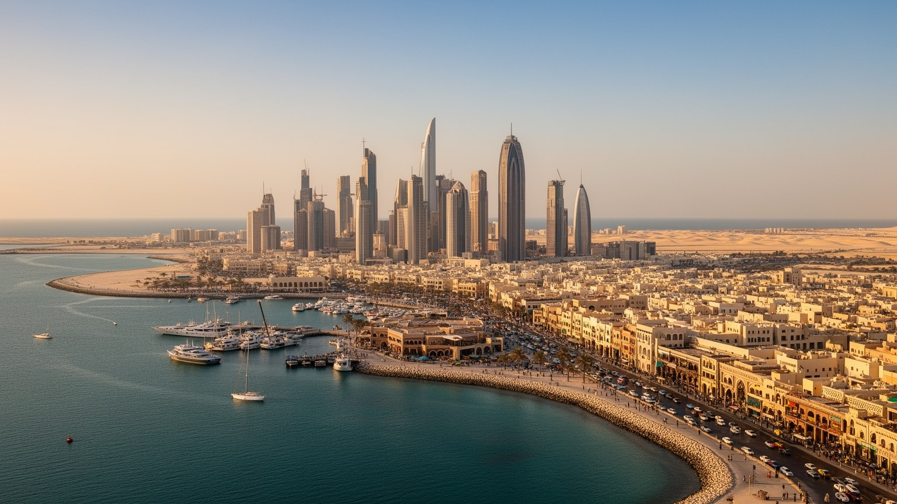
🇧🇭 バーレーン / ペルシャ湾 / World City Atlas
小さな島国の首都に、湾岸金融、石油精製、真珠交易の記憶、宗派政治、移民労働、埋立開発、モスクとスークの生活が密集しています。
都市の骨格
マナーマは大都市圏の規模では目立ちませんが、バーレーンの政治、金融、港湾、文化、観光の窓口が集中する首都です。橋でサウジアラビアと結ばれ、埋立地と古い市場が同じ海岸で向き合います。
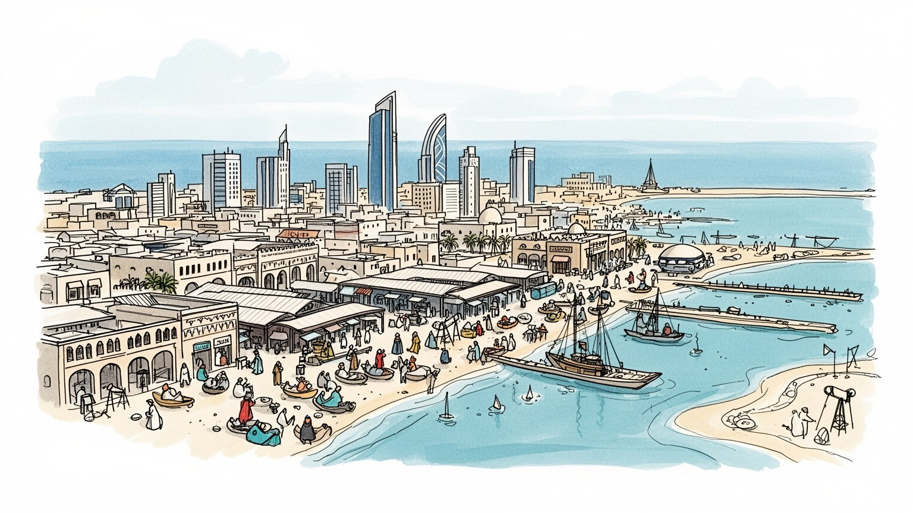
マナーマはサウジアラビア、イラン、米軍、湾岸協力会議の力学が交わる小国首都です。橋、港、金融規制、宗派政治、安全保障が、日々の通勤や行政の判断にも影を落とします。島の小ささが外交をさらに濃くします。
金融、石油精製、アルミ、港湾、観光、建設、小売、政府雇用が都市を支えます。銀行街の専門職と、建設、清掃、飲食、家事労働で働く移民の生活が近接し、賃金と身分の差が街を形づくります。昼夜で表情が変わります。
スンナ派王家、シーア派住民、南アジア系移民、教会、寺院、古いスーク、美術館が重なります。宗教行事、音楽、家族の外食、夜の市場と音楽も、湾岸首都の多層性を作ります。祈りと買い物の声が街で隣り合います。
旅行者は湾岸夜景、スーク、国立博物館、真珠道、要塞、ホテルを巡りますが、住民は酷暑、家賃、交通、埋立開発、労働条件、宗派間の緊張と向き合います。観光の明るさの奥に生活の調整があります。海風も近い街です。
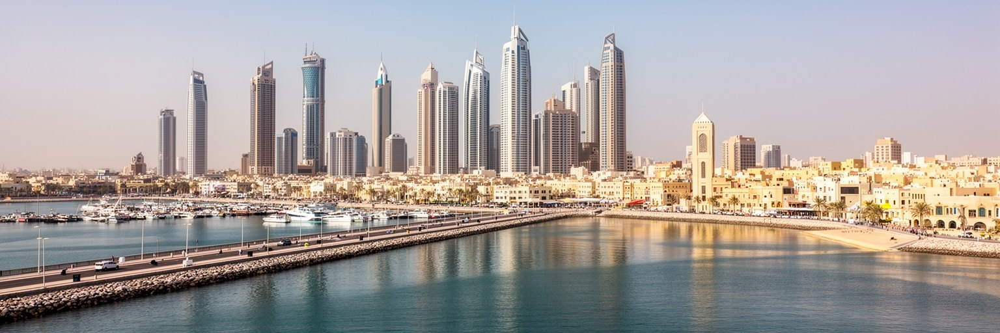
マナーマは、国土の小さいバーレーンが湾岸政治と世界経済に接続するための首都です。地図では小さな島の北東部にある都市ですが、海を隔ててサウジアラビア、カタール、イランへ近く、橋、港、空港、金融機関、外交施設が集中します。サウジアラビアと結ぶキング・ファハド・コーズウェイは、週末観光、物流、通勤、政治的な後ろ盾を同時に象徴します。米海軍の存在や湾岸協力会議の枠組みも、都市の安全保障感覚を作ります。マナーマの首都性は、巨大な官庁街よりも、小さな国が外部の力と近距離で交渉し続ける密度に表れます。金融規制、外交、宗派間の緊張、エネルギー政策、近隣国との関係は、住民にとって抽象的な国際政治ではありません。観光客の流れ、銀行の雇用、デモの取り締まり、道路封鎖、住宅価格、外国人労働者の滞在資格へ形を変えて届きます。島の首都であることは、海に守られることではなく、海を通じて常に外部と接することです。マナーマを読むには、高層ビルの輪郭だけでなく、橋の交通量、港湾の検査、外交施設の警備、近隣国の政治が街の速度をどう変えるかを見る必要があります。小さな首都の行政判断は、近隣大国の意向、国際金融の信頼、国内の安定を同時に測りながら進みます。その緊張が、道路の警備や外交地区の静けさにも表れます。日常の静けさもまた、複雑な均衡の上にあります。
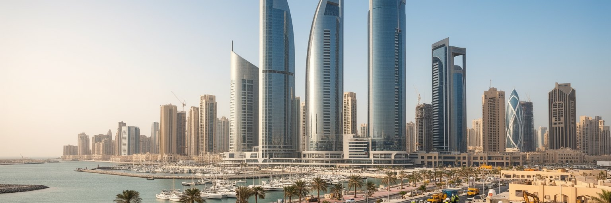
マナーマは、石油収入の大きさだけでは説明できない金融都市です。バーレーンは早くから銀行、保険、イスラム金融、オフショア取引、規制制度を整え、湾岸の資金を扱う場所として存在感を作りました。高層のオフィス、海岸沿いの再開発、国際銀行、中央銀行、会計や法律の専門職は、都市に専門的な雇用と国際的な時間感覚をもたらします。金融は画面上の取引に見えますが、実際にはホテル、会議、タクシー、飲食、警備、清掃、翻訳、IT保守まで多くの労働を伴います。昼は英語の契約とSNSで動く求人が目立ち、夜は湾岸から来た買い物客がモールやレストランを満たします。一方で、金融都市の光は不平等も映します。銀行街の高賃金専門職と、低賃金の移民サービス労働が同じ通りを使い、住宅地や交通も収入によって分かれます。近隣のドバイ、リヤド、ドーハとの競争も厳しく、マナーマは規模ではなく、規制、費用、人的ネットワーク、歴史的な金融蓄積で位置を保とうとします。金融街を見る時は、ビルの高さよりも、どの資金がここを通り、どの仕事が生まれ、どの住民が都市の成長から遠いまま残るのかを読む必要があります。金融の信頼は、透明な制度、英語で働ける専門人材、湾岸内での移動のしやすさにも支えられます。都市の競争力は、数字だけでなく、契約を処理する日々の実務にあります。
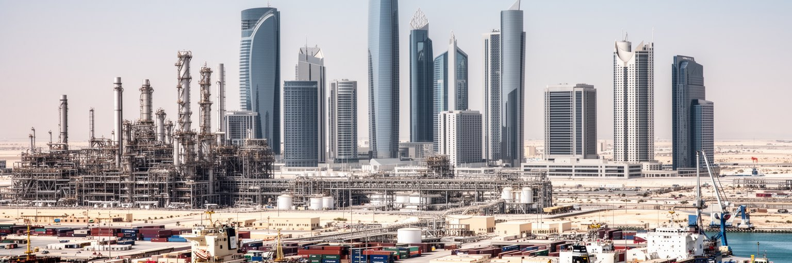
バーレーンは湾岸の大産油国ほど豊かな油田を持たず、だからこそ早くから石油後の産業づくりを迫られてきました。マナーマの周辺では、石油精製、アルミニウム、石油化学、港湾物流、金融、観光、教育、医療が組み合わさり、単一資源への依存を下げようとしています。精製施設や工業地区は都市中心部の華やかなイメージから離れて見えますが、税収、輸出、技術職、港湾需要、エネルギー価格に深く関わります。アルミ産業は電力を大量に使うため、エネルギー政策や国際価格の変動を都市経済へ伝えます。多角化は計画書の言葉ではなく、若者が大学で何を学ぶか、移民労働者がどの現場に集まるか、政府がどのインフラへ投資するかという実務です。観光や金融は都市の顔を明るくしますが、工場、港、修理、倉庫、配送がなければ生活と輸出は成り立ちません。F1開催や国際会議もホテル、警備、飲食、交通の仕事を増やし、都市の季節感を作ります。環境面では、排出、海岸開発、廃熱、交通、廃棄物も課題になります。マナーマの産業を読むには、摩天楼と工業地帯を切り離さず、石油の残る収入をどう次の雇用へ変えようとしているかを見る必要があります。小国であることは制約ですが、政策転換が都市空間に早く現れる条件にもなります。大学や職業訓練、起業支援、女性の就業も、多角化を実際の家計へ届かせる鍵です。産業の変化は、統計より先に通勤先と技能の需要として見えてきます。
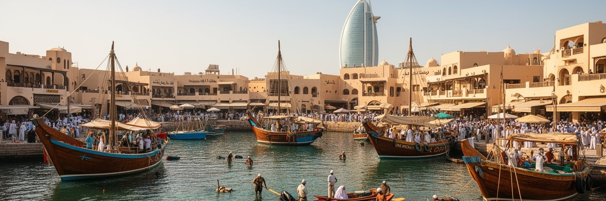
マナーマの歴史を金融と石油だけで読むと、都市の深い時間を見落とします。バーレーンは古くから真珠採取、海上交易、淡水、船大工、商人ネットワークで知られ、湾岸の人と物が行き交う場所でした。真珠産業は過酷な潜水労働、船主、商人、季節、借金、家族の暮らしを伴い、天然真珠の世界市場が崩れるまで島の社会を支えました。古いスークやムハッラク方面の真珠関連遺産は、現代の高層ビルとは違う都市の尺度を示します。狭い路地、日陰、商家、中庭、モスク、港への道は、冷房と自動車の時代以前に、暑い気候と商業をどう調整していたかを語ります。真珠の記憶は美しい宝飾品だけではありません。海で働いた人の危険、階層、季節移動、インド洋交易、南アジアとの関係も含みます。今日のマナーマでスークを歩くと、香辛料、金、布、携帯電話、安価な日用品が並び、古い交易都市の性格が新しい消費に置き換わりながら続いていることがわかります。文化遺産を守るには、建物を保存するだけでなく、港と商いの記憶、潜水労働の苦しさ、湾岸の海を生きた人々の声を都市の物語に残す必要があります。真珠の繁栄は、島の富だけでなく、不安定な海に家計を預けた人々の忍耐にも支えられていました。その記憶が、現在の商業都市に深さを与えます。海を見れば、宝石だけでなく労働の時間も思い出されます。
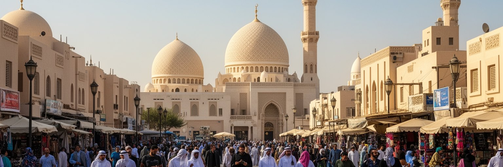
マナーマの宗教風景は、湾岸の多様性と緊張を同時に映します。バーレーンではスンナ派王家が国家を率いる一方、シーア派住民も多く、宗派の違いは信仰だけでなく、政治参加、雇用、警察、住宅、地域の記憶と結びついて語られます。マナーマと周辺の村では、モスク、フサイニーヤ、宗教行列、葬儀、金曜礼拝が地域の時間を区切り、宗教的な場が社会的な相談や互助の場にもなります。ラマダンやアーシューラーの時期には、夜の食事、菓子、募金、ラジオの宗教番組、SNSの呼びかけが街の時間を変えます。2011年の抗議運動とその後の弾圧の記憶は、都市の政治意識に残り、公共空間の使い方や安全保障の感覚に影響しています。宗派政治を単純な対立として描くことはできません。家族、職場、商業、学校、友人関係は日常的に交差し、多くの住民は安定と尊厳の両方を求めて暮らしています。同時に、政治的権利、表現、雇用機会、地域への投資をめぐる不満は消えません。移民が多い都市では、イスラムの諸派だけでなく、キリスト教会、ヒンドゥー寺院、仏教やシークの場も生活を支えます。宗教行事の日には、道路、商店、警備、家族の訪問が一斉に変わります。信仰は個人の内面だけでなく、都市の時間割そのものを作ります。緊張の中でも、地域の近所の助け合いは街で静かに続いています。
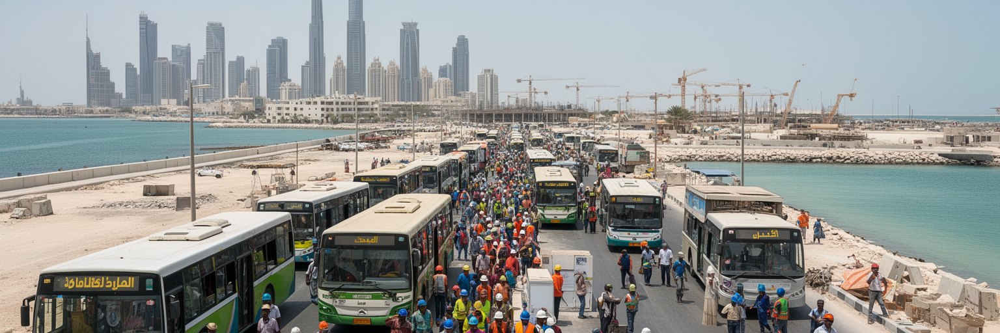
マナーマの日常は、南アジア、東南アジア、アラブ諸国、アフリカから来た多くの移民労働者によって支えられています。建設現場、清掃、警備、飲食、家事労働、小売、配送、ホテル、修理、港湾、事務補助など、都市の見えにくい仕事の多くが外国人労働に依存します。銀行街やホテルの光が明るいほど、その裏には長時間勤務、低賃金、暑熱、狭い宿舎、送金、滞在資格、雇用主との力関係があります。移民労働者は単なる労働力ではなく、祈り、食事、休日のクリケットやサッカー、母国語の店、送金の窓口、電話でつながる家族を持つ都市の住民です。スークや労働者地区では、インド料理、フィリピンの食材、ネパールやバングラデシュの送金店、英語やヒンディー語やタガログ語の会話が混ざり、マナーマの文化を作っています。一方で、市民権、政治参加、家族帯同、労働保護、医療、休暇には明確な境界があります。夏の酷暑は屋外労働者にとって健康リスクであり、気候変動は労働条件の問題でもあります。マナーマを生活都市として読むには、観光客が通るホテルや商業施設だけでなく、早朝のバス停、労働者宿舎、送金窓口、安い食堂、路上の小商いに目を向ける必要があります。そこに都市を動かす実際の手があります。送金は母国の家計、学費、医療費を支え、都市の賃金が遠い村の生活へ届く経路にもなります。そのつながりを見て初めて、移民労働の重みがわかります。
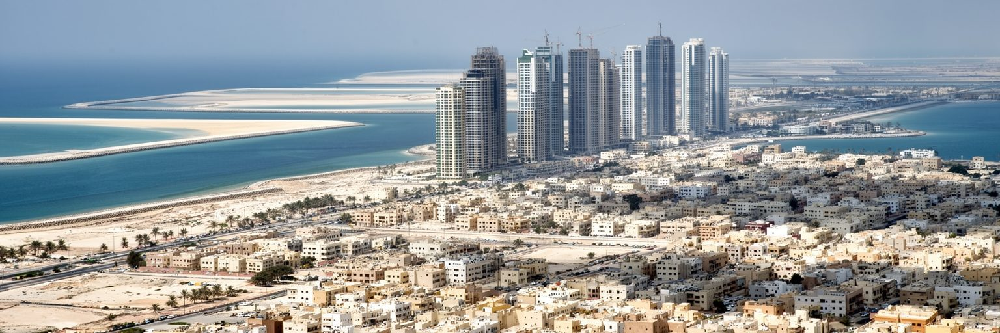
マナーマの都市形態は、海を埋め立てながら広がってきました。バーレーン全体の土地は限られ、首都圏では金融街、ホテル、商業施設、高層住宅、道路、港湾、公共施設のために海岸線が何度も作り替えられています。埋立地は新しい景観と投資を生み、海流、生態系、漁業、公共の海辺、古い地区とのつながりを変えます。高層住宅やゲーテッドな開発は、駐車場、警備、冷房、眺望を備える一方、低所得の移民労働者や古い住民にとっては家賃や交通の負担が重くなります。旧市街やスーク周辺には、老朽建物、細い路地、商住混在の生活が残り、日陰、徒歩、家族経営の店、子どもの通学路、高齢者の近所付き合いが都市の密度を支えています。新しい埋立地と古い市街地の差は、見た目の近代性だけでなく、誰が海へ近づけるか、誰が中心に住めるかを問う論点です。住宅政策は国民向けの公的供給、民間開発、外国人向け賃貸、労働者宿舎の管理が絡み、単純ではありません。海岸道路を走ると、都市が成長の余地を海へ求めていることがよくわかります。しかし埋立で得た土地は無限ではなく、気候、高潮、暑熱、交通渋滞を考えれば、住まいの質と公共空間の公平性を同時に問う必要があります。海辺が投資物件になるほど、漁業者や低所得住民が水際から遠ざかる危険もあります。都市の成長は、海を誰のものとして扱うかを常に問います。
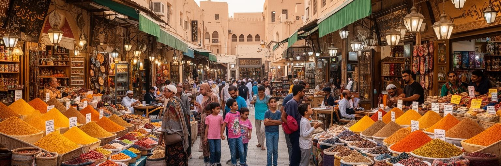
マナーマの文化は、博物館や劇場だけでなく、スーク、食堂、モスクの周り、家族の集まり、移民労働者の休日に表れます。バブ・アル・バーレーン周辺の市場では、金、香水、香辛料、布、土産物、携帯電話、日用品が並び、湾岸商業の古い形と現代消費が混ざります。食卓には、マチブース、魚料理、デーツ、カルダモンの香るコーヒー、イランやインドの影響、レバノン料理、南アジアの食堂、フィリピンの惣菜が入り込みます。外食は観光の楽しみであると同時に、単身の移民労働者や長時間働く人にとって生活の基盤です。スークの路地では、アラビア語、英語、ヒンディー語、ウルドゥー語、タガログ語、携帯から流れる音楽が交わり、都市の人口構成が音として聞こえます。文化の多様性は華やかですが、消費できる人と働く人の差も明確です。高級レストラン、ホテルのブランチ、安い労働者食堂、家庭の食事は、同じ都市にありながら交わる範囲が限られます。文化を読むには、祝祭や料理名だけでなく、誰が調理し、誰が配達し、誰が食卓に座れないのかを見る必要があります。マナーマのスークと食堂は、湾岸の交易史、移民、宗教、階層が日常の匂い、値段、呼び込みの声に変わる場所です。夕方の買い物、礼拝後の食事、休日の散歩は、住民が都市を取り戻す時間でもあります。食の場は、異なる身分の人が短く交差する貴重な公共空間です。
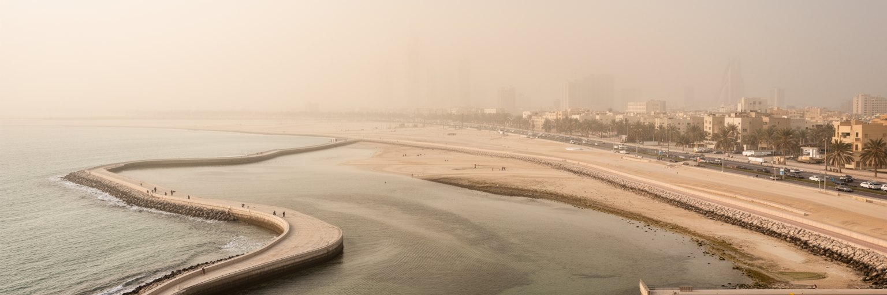
マナーマの気候は、都市の見え方と働き方を大きく決めます。夏は非常に暑く、湿度の高い湾岸の空気が体力を奪い、屋外労働、通学、歩行、観光、建設、配送に強い負担をかけます。冷房は生活を支える必需品ですが、電力需要、室外機の熱、建物の断熱、所得差も都市問題にします。日陰、アーケード、夜間の外出、車移動、モールの利用は、暑熱への適応として定着しています。砂塵や海風、塩害は建物、車、道路、設備の維持にも影響します。冬は比較的過ごしやすく、イベント、屋外カフェ、海辺の散歩、週末観光が増え、都市の社交が外へ出ます。気候は単なる背景ではありません。労働時間の規制、建設現場の休憩、水分補給、バス停の日陰、低所得者の住環境、観光シーズンの稼ぎを左右します。埋立地や高層ビルが増えると、風の通り道や海岸の利用も変わります。気候変動で暑熱が強まれば、マナーマの都市計画はさらに日陰、歩行性、公共交通、緑地、水辺の扱いを問われます。海に面した都市でありながら、涼しさを得るには高度なエネルギー消費に頼るという矛盾があります。マナーマを歩くことは、湾岸都市がいかに気候を制御し、その負担を誰に配分しているかを体で知ることでもあります。涼しい屋内に入れる人と、屋外で働き続ける人の差は、夏の街で特にはっきり見えます。気候は社会の不平等を拡大する力にもなります。
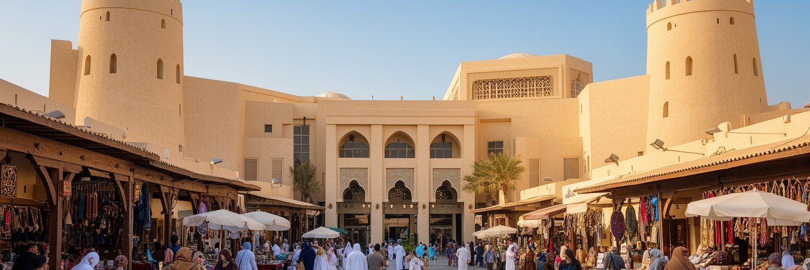
マナーマの観光は、湾岸の夜景、ホテル、買い物、飲食だけではありません。バーレーン国立博物館ではディルムン文明、真珠、近代国家の歩みを知ることができ、近郊のバーレーン要塞やムハッラクの真珠関連遺産は、島が古くから海上交易と結びついていたことを示します。スークでは金、香辛料、布、軽食、日用品が混ざり、観光客は都市の商業の厚みを体験します。週末にはサウジアラビアからの来訪者も多く、ホテル、レストラン、娯楽施設、海岸開発は近隣国の需要に支えられます。一方で、観光の明るさは政治的な緊張や労働条件を見えにくくすることもあります。遺産地区を整備する時には、古い建物を撮影スポットにするだけでなく、そこに暮らす人や商う人が残れるかが重要です。博物館や要塞は過去を美しく整理しますが、真珠潜水の過酷さ、植民地期の保護国体制、移民労働、宗派間の不満も都市の記憶です。マナーマを旅するなら、海沿いのホテルからスークへ歩き、博物館で深い時間を読み、労働者食堂や古い路地の生活感にも目を向ける必要があります。観光の価値は、快適な消費だけでなく、小さな島国がどのように世界とつながってきたかを理解できる点にあります。短い滞在でも、移動の便利さに甘えず、暑さ、距離、祈りの時間、住民の生活空間を尊重すると、都市の読み方は深くなります。
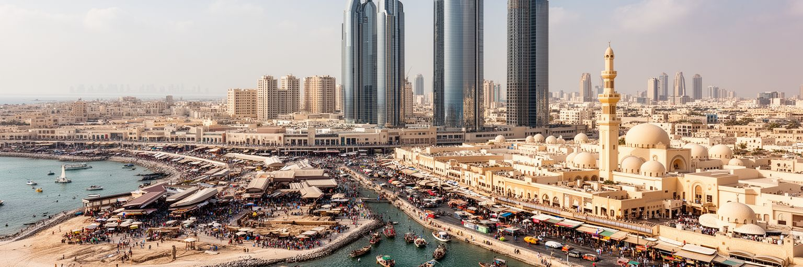
マナーマは、人口や面積の規模だけで測ると見落とされやすい都市です。しかし、ここには湾岸の現代を読むための要素が濃く集まっています。真珠交易の海、石油とアルミの産業、金融規制、サウジアラビアとの橋、米軍と安全保障、宗派政治、移民労働、埋立開発、スークの多言語の日常が、短い距離の中で重なります。高層ビルは近代化を示しますが、その足元には暑熱の中で働く建設労働者、送金を待つ移民、古い市場で店を守る商人、宗教行事を支える地域社会があります。マナーマの魅力は、湾岸的な豪華さよりも、小さな島国が外部の力を受け止めながら都市を保っている複雑さにあります。経済の多角化は未来への挑戦ですが、住民にとっては賃金、住宅、教育、交通、政治的な声の問題として現れます。観光で訪れる人は、夜景やモールだけでなく、博物館、スーク、港、モスク、移民の食堂、埋立地の海岸をつなげて見ると、都市の輪郭が立ち上がります。マナーマを読むことは、湾岸の富、脆さ、規律、多文化性、不平等を同時に読むことです。小さな首都であるほど、世界経済と生活の距離は短くなります。だからこそ一つの通りの景色にも、外交、金融、宗教、労働、気候が凝縮されます。マナーマは、巨大都市ではない都市が世界をどう映すかを教えてくれます。海辺の短い移動だけで、島国の過去と未来が見えてきます。